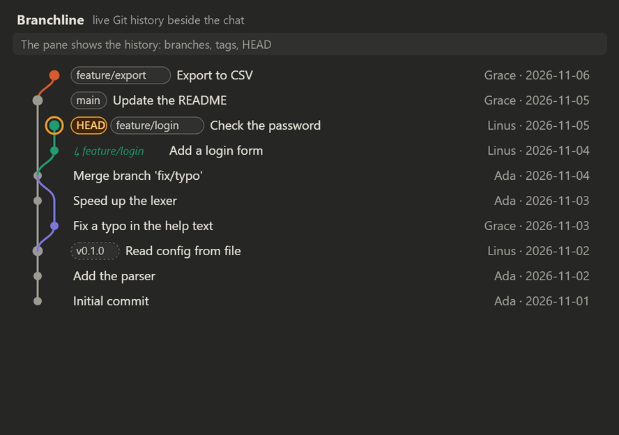
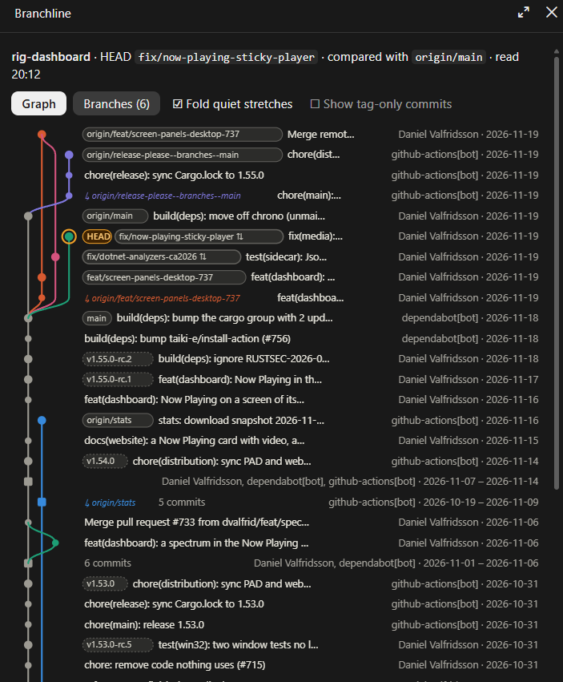
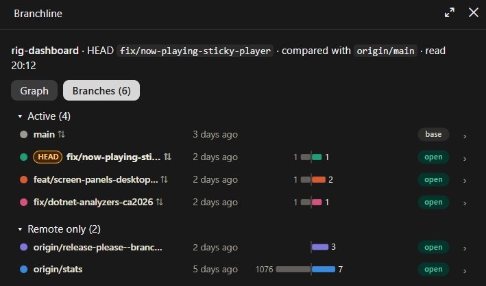

Branchline is a Claude Code plugin that draws your repository's branches, tags and HEAD in a pane next to the conversation, and shows how every branch stands against main. It updates by itself as you and Claude commit, merge and switch.
/plugin install git-branchline --marketplace dvalfrid/git-branchline

The graph as Branchline draws it, following a repository through commits, a merge and new branches.
Made for the Claude desktop app, with a text fallback for the terminal.
The commit graph colored by branch, with ref pills, HEAD ringed and tooltips on hover. Quiet stretches fold into one row when the graph does not fit.
Branches grouped as Active, Local and remote, Remote only and Old local, with age, ahead/behind bars and status.
See its commits and most changed files, ask Claude about it, copy its name, or clean it up.
Reads again after every git command Claude runs, and notices changes from a terminal or another Git client within seconds.
A row above the prompt shows the checked-out branch and opens the pane. /branchline does the same.
In a terminal session the graph is drawn as text in the style of git log --graph.
Check boxes beside the tabs fold quiet stretches (by default only when the graph does not fit) and show commits only a tag keeps. They are kept between sessions.


The pane in the Claude desktop app, on a real repository.
Branchline never fetches, checks out or pushes. The one exception: it can delete a merged local branch with git branch -d, which refuses unmerged work, after you press twice. Anything else, such as force-deleting a branch or deleting one on a remote, is handed to Claude as a prompt for you to send.
Requires Git on PATH. Git 2.41 or later is fastest.
/plugin install git-branchline --marketplace dvalfrid/git-branchline
y to add the marketplace.dvalfrid/git-branchline and press Sync.claude plugin install git-branchline --marketplace dvalfrid/git-branchline
A new release reaches you when you run claude plugin update git-branchline@git-branchline and restart Claude Code. Needs Claude Code 2.1.326 or later; see the known issues.